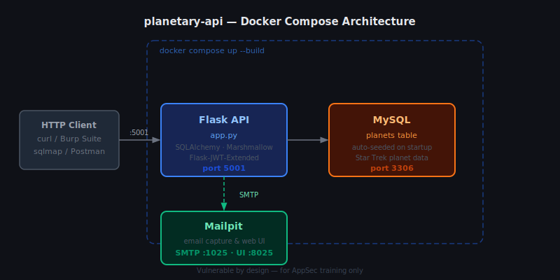
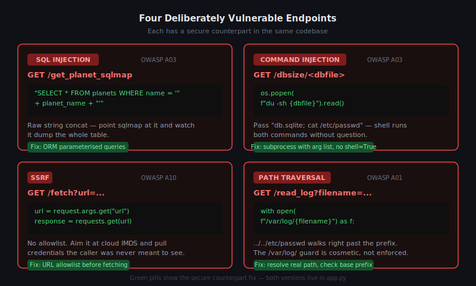
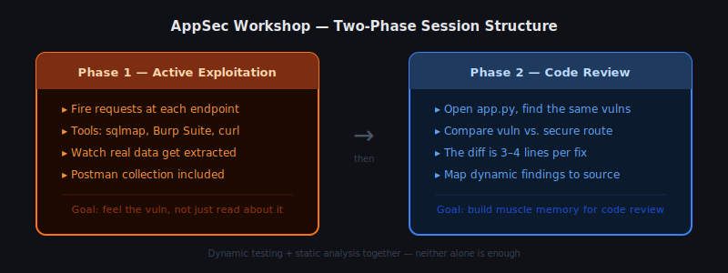

I spend a lot of time explaining API vulnerabilities to engineers, and nothing lands better than a live target they can actually break. Slide decks about SQL injection are forgettable. Firing off a crafted request and watching a database dump appear on screen? That sticks. So I built planetary-api — a Flask REST API backed by Star Trek planet data, with deliberately vulnerable endpoints sitting right next to their secure counterparts. Show the problem, show the fix, let people poke at both.
This post walks through the project, how to spin it up, and what each vulnerability looks like in practice.
Because nobody cares about losing fake planet data. When you're running a workshop and you want people to feel free to break things, obviously fictional data removes the anxiety about causing real damage. Vulcan, Qo'noS, Bajor — mess with it guilt-free. The API is a standard Flask REST API; the planet theme is just scenery.
The project ships with a Docker Compose file that brings up three services: the Flask API, a MySQL database, and Mailpit for SMTP testing. Clone the repo and run:
git clone https://github.com/andyrat33/planetary-api.git
cd planetary-api
docker compose up --build
The API listens on port 5001. MySQL is on 3306, Mailpit's web UI on 8025. Once the containers are running, hit the root endpoint to confirm everything's alive:
curl http://localhost:5001/
The database seeds itself with planet data on startup, so there's nothing to configure manually. The first build takes a couple of minutes while it pulls images and installs dependencies. After that, restarts are fast.

The whole application lives in a single app.py. It's intentionally not split into blueprints or packages, because the point is to keep the code readable during a training session without people having to jump between files. SQLAlchemy handles the ORM layer, Marshmallow does serialisation and validation, and Flask-JWT-Extended manages tokens.
Each planet has a name, home system, mass, orbital period, and a few other fields. The models are SQLAlchemy declarative base classes; the schemas are Marshmallow classes that control what gets serialised into responses. Authentication follows a standard JWT pattern: POST credentials to /login, get a token back, pass it as a Bearer header on protected routes. The vulnerable endpoints skip or misuse these controls in various ways — deliberately.
Four broken endpoints, each one demonstrating a different OWASP vulnerability.

/get_planet_sqlmapThis endpoint takes a planet name as a query parameter and builds a raw SQL query by string concatenation:
query = "SELECT * FROM planets WHERE name = '" + planet_name + "'"
Feed it a classic payload and the database responds accordingly. The endpoint exists specifically so you can point sqlmap at it:
sqlmap -u "http://localhost:5001/get_planet_sqlmap?name=Vulcan" --dump
The secure counterpart at /get_planet uses SQLAlchemy's ORM query methods, which handle parameter binding automatically. That's the whole fix.
/dbsize/<dbfile>This endpoint takes a filename from the URL path and passes it straight to a shell command:
os.popen(f"du -sh {dbfile}").read()
Pass db.sqlite; cat /etc/passwd as the filename and the shell happily executes both. In a training session this is a good one for showing how quickly "run a quick system command" becomes a foothold.
/fetchSSRF (Server-Side Request Forgery) is easy to miss in code review because the endpoint looks reasonable. This one accepts a URL and fetches its content:
url = request.args.get("url")
response = requests.get(url)
No validation. No allowlist. Point it at your cloud provider's IMDS (Instance Metadata Service) endpoint and you're retrieving credentials the client was never supposed to see. I use this one to demonstrate why any feature that makes outbound requests on behalf of user input needs an allowlist, full stop.
/read_logThe log reader takes a filename parameter and opens it directly:
with open(f"/var/log/{filename}") as f:
return f.read()
The /var/log/ prefix looks like it scopes the access. It doesn't. Pass ../../etc/passwd and the traversal dots walk straight out of the intended directory. The fix is to resolve the canonical path after joining and reject anything that doesn't still start with /var/log/.
Every vulnerable endpoint has a secure version. The SQLi route uses ORM queries. The command injection route uses subprocess with a list of arguments rather than shell interpolation, so there's no string the shell can interpret. The SSRF route validates the URL against an allowlist. The path traversal route resolves the real path and rejects anything that escapes the intended directory.
Having both versions in the same codebase is intentional. In a workshop I'll walk through the vulnerable version first, demonstrate the exploit, then open the secure version and show which change closes the hole. The diff is usually three or four lines. That's the point — these fixes aren't complicated. They're just easy to skip when you're moving fast.

The setup that works well for me: spin up the containers on a shared network, give everyone the base URL, and let them work through the endpoints with Burp Suite, sqlmap, or plain curl. The Postman collection in the repo gives people a starting point if they want guided exercises rather than open-ended exploration.
I usually split sessions into two halves. The first half is exploitation — work through each vulnerability, understand what's being abused. The second half is code review — open app.py, find the same vulnerabilities by reading the code, and compare notes with what people found through active testing. That combination is what actually builds the muscle memory for spotting these things in production code. Dynamic testing alone isn't enough; you need the code review half too.
One practical tip: Mailpit is worth running alongside the API. Some registration and notification flows send emails, and seeing them in Mailpit's web UI on port 8025 adds a bit of realism without needing a real mail server.
planetary-api is a training tool. It's not a production Flask template, and you wouldn't want to deploy it anywhere real. What it gives you is a controlled environment with known vulnerabilities you can actually exploit and then study the fix for, side by side. If you're running internal AppSec training or just want a local target to practice against, clone it, run docker compose up, and start poking. The Star Trek data is just a bonus.
The repo is at github.com/andyrat33/planetary-api.